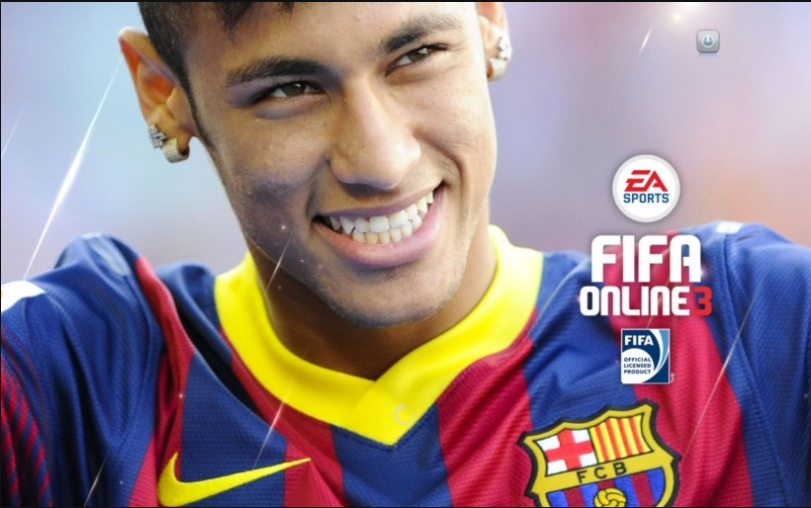

브라질 국적의 파리 생제르맹 FC 소속 축구선수.포지션은 윙어이다.
현재 브라질 축구 국가대표팀의 아이콘같은 선수이며 산투스 FC 시절 코파 리베르타도레스 우승과 MVP를 차지하고 엄청난 주목을 받으며 유럽으로 건너와 FC 바르셀로나의 2014-15 시즌 트레블 및 UEFA 챔피언스리그 득점왕에 오르고 2017년 역대 최고 이적료로 파리 생제르맹으로 이적하며 수많은 우승컵을 들어올렸다.
또한 발롱도르 3위 2회, FIFA FIFPro 월드 XI 2회, UEFA 올해의 팀과 UEFA 챔피언스리그 득점왕1회, 도움왕2회, 리그1 올해의선수, 남미 올해의선수 2회, FIFA 월드컵 브론즈부츠와 드림팀에 선정되는등 개인커리어 또한 화려하다
